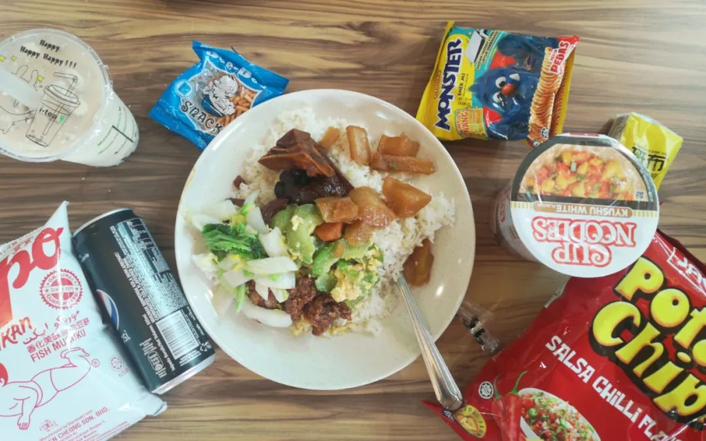

最近每天下午都会下一阵雨。我说的一阵雨，和阵雨给人的感觉是不一样的。因为我的推文里充斥着各种抓耳挠腮的表达，所以我尝试把一阵雨说清楚。昨天的雨和雷，不说有多么大，但是晚上我在食阁的糖水店里买椰子的时候，请店主帮我在椰子上开个口我好回去开盖吃。店主把椰子拿进去，然后我就听到几声闷响。没敢过去看，因为不知道到底是在帮我劈椰子，还是和前任在亲密地叙[刀]旧。我在朋友圈发，说那会儿的雷就像是在杜甫江阁看橘子洲头的团圆烟花那么棒。如果不打雷，雨还是很吸引人去淌水玩的。
今天下午在实验室，休息了一会儿醒来，隔着耳机和休息室的防爆玻璃就听到身后几声闷响。果不其然的旧事重提。窗户没法开，实验室外边的热带暴雨打在被制造来填充光污染的玻璃上。和我红轴键盘的声音挺像的。周末也有一天准备去远足，当有人慑于热带丛林暴雨的威力退却之后，我想了想还是不要带相机去测试防溅射性能了。沉闷的雷雨就像泥泞的生活。席卷八方的暴躁输入在同一个观察者周遭搅动不停。我以为会有所不同，即使是再干瘪的人也应该对这些做出应答。但是躺平的人就是不必。躺平的人就是可以把所有的波涛全都拉成褶皱，虽然展不平但也抹成了微缩胶卷黑胶唱片，非特定的放大工具不能读也。也有一天，突然半夜雨很大很大，下得我去走廊上躲在门框上吹了会儿风。一瞬间觉得和武汉同频了，因为那天晚上好多人发了校车改作渡船的消息，像去了个什么渡口的模样。我本来是想下车之后直接回寝室的。但是耳机里的歌很好听，是MJ的Behind the mask改自坂本龙一。于是我又再沿着寝室外围的线逛了一圈。每天早出晚归的，除了会感觉困和疲劳之外，脚也变臭了一些可能是又一个很明显的标识。人们都在寻找证明自己主观想法的客观痕迹。左眼跳财是主观想法，任何最近财运变棒都成了客观痕迹；右眼跳灾是封建迷信，最近无事发生是破开忧心忡忡的最佳选择。我走在路上会突然拐个弯，也不是因为有什么障碍物绊脚或者怎么的。就只是想拐个弯。最不喜欢的就是按无聊的规矩来，但实际上规矩越繁复我越如鱼得水。下次走在路上我也还是会无聊地原地转圈再接着走。这只是因为无聊。以前的状态: 虽然做不出有用的东西，但的确知道有些东西确实是没用的。现在对有用的概念又明晰了一些，而且也可以提出一些没用的方案和也许会有用的方案。但其实还是没什么用。最近走在路上习惯不紧不慢的走。即使我没有刻意观察别人，但总能恰好挡住旁边的人妄图加快步伐的路。昨天去买椰子的时候，我穿着黑衣服在路上本来没什么感觉。有一对男女走得太慢了，于是我走到了他们旁边。他们走得分开了。我的余光先是瞟到女生走到我旁边，然后侧着抬头看了看发现不对，然后离开；接着男生也以为身后跟的人是我，放慢脚步跟到我旁边，像嗅了嗅味道发现不是自家味道的二哈，重新又走到了后边。从商店的镜子里，我看到他们两个都穿的黑衣服。我穿的衣服上写着：改天有空约How About Never. 在路上捉弄别人实在好玩。有时候是出于无心搞了些恶作剧，但也有些时候的确是有心。等食阁炒饭大叔给我炒加了中国香肠片的上海炒饭时，我顺便去逛了逛旁边药妆店的胡须膏。我看不懂这些品牌之间的区别，于是导购走到我旁边来问我需不需要帮忙。虽然我的确需要帮忙，但是当时我正在听歌，而且歌还不错是八仙饭店的歌。所以我决定拒绝他的帮助，还是自己看比较聪明。何况我来逛只不过是因为炒饭要等十分钟。出店之后我又买了两碗龟苓膏、一碗芦荟果冻。有理由怀疑炒饭店要炒这么久又不提供座位的隐藏目的是给周边店面提供客源。其实是可以深入思考一下的对吧。如果这部分的客源都是因为一家便宜好吃的炒饭而吸引过来，刚好又要在这里等上许久。那么可以见得这段时间要么就玩手机玩过去，要么就逛逛周围的店。当去这家店的消费力水平和营销倾向和周边的店相匹配，那么很容易形成一个配套的设施，就像是我现在科研里的两部分物质发射光谱和吸收光谱重叠起来。丰年留客足鸡豚，一碗炒饭就把客人的脚留下了，还挺会算账的说。想想周麻婆几块钱一大碗的麻婆豆腐，还有宜家两块钱的冰淇淋和各种首单减免，应该是同一个marketing内核出来的。